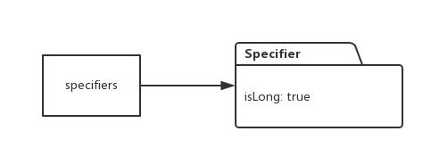
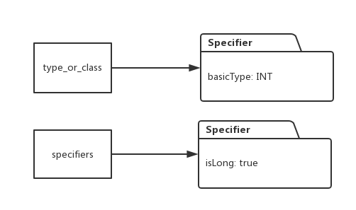
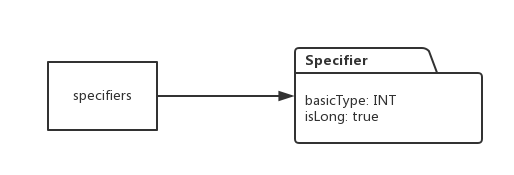
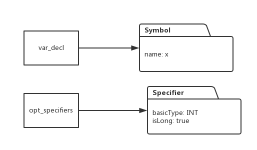
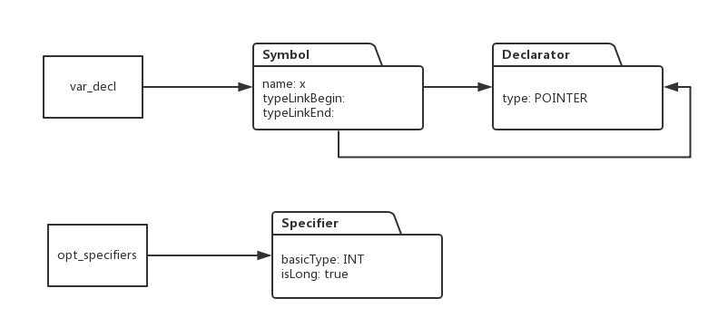
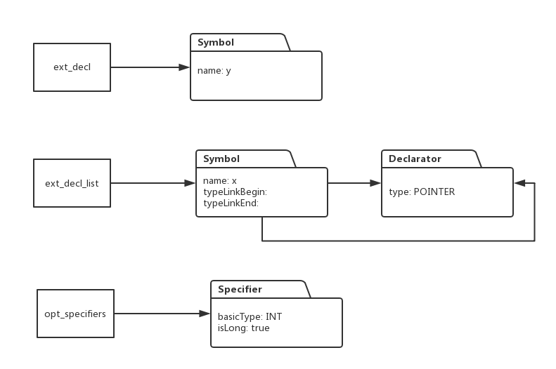
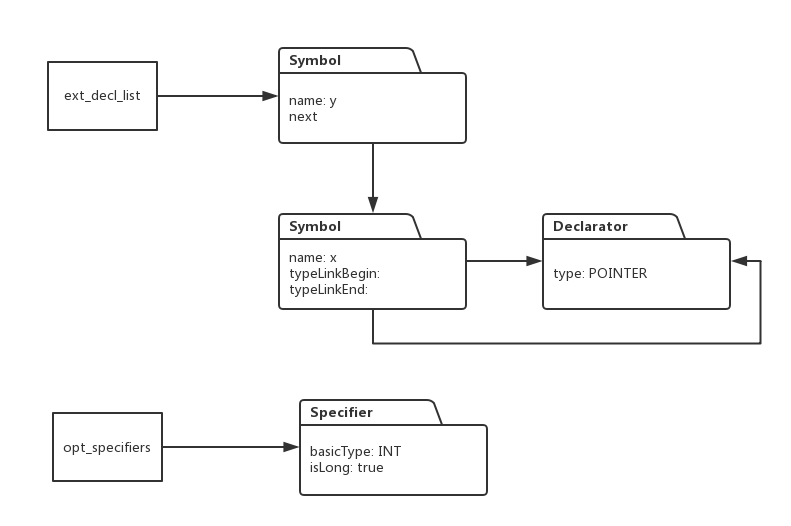
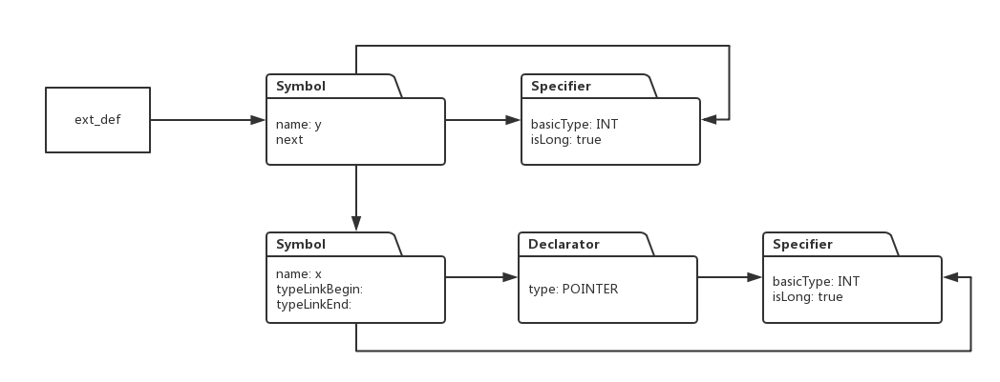

本节讲解符号表和类型系统的代码实现，该文档只有结合代码调试视频一起看才容易理解，演示视频的地址为：
http://study.163.com/course/courseMain.htm?courseId=1002830012
前几节，我们讨论的符号表和类型系统的基本原理，这一节，我们看看如何从代码上实现前面我们探讨的内容，毕竟，实践才是检验真理的唯一标准，我们仍然基于前面说过的声明语句：
long int *x, y;
看看，在对该语句的语法解析过程中，如何构造相应的符号表，以及对变量x,y构造他们的类型系统。我们将重走一遍上面语句的语法解析流程，在解析过程中，我将把符号表和类型系统的实现逻辑穿插其中。
1:解析器首先做一次shift操作，将long读入，然后返回一个TYPE标签。
2: 通过 type_specifier -> TYPE, 进行一次reduce操作，此时，我们生成一个Specifier对象，这样，在解析堆栈顶部的是非终结符type_specifier，在属性堆栈上，对应的是Specifier对象：
上图左边对应的是解析堆栈，右边对应的是属性堆栈。
3: 接着是根据表达式type_or_class -> type_specifier, specifiers->type_or_class, 连续进行两次reduce操作，这两次reduce不需要进行任何操作，只需要把第一次生成的Specifier对象传达到相应属性堆栈上就可以，于是，这两次reduce后，解析堆栈和属性堆栈的对应关系如下：

4:读取int, 进行一次shift操作，把int对应的标签TYPE,传入解析器.
5:根据type_specifier->TYPE,做一次reduce操作，同时生成对应的Specifier对象, 于是解析堆栈和属性堆栈情形如下：
6: 接着根据表达式type_or_class -> type_specifier, 做reduce操作，同时把前一步骤的Specifier对象传入属性堆栈的对应位置：

7: 根据表达式表达式 specifiers ->specifiers type_or_class 做reduce操作，这次reduce的同时，我们需要将生成的两个specifier合成一个，完成后解析堆栈和属性堆栈的情况如下：

8: 根据opt_specifiers -> specifiers 做一次reduce操作：
9:接下来是连续两次shift操作，把*对应的标签START和变量x对应的标签NAME,依次读入解析器。
10:根据表达式 new_name -> NAME, 进行reduce操作，同时生成一个Symbol对象
10. 根据表达式var_decl -> new_name 进行reduce操作，这次操作不生成新的对象，只是把上面生成的symbol对象转移到对应的属性堆栈：

11:接下来是根据表达式 var_decl -> STAR var_decl做reduce操作，此时由于遇到表示指针的*号，因此要生成一个Declarator对象：

12: 根据表达式ext_decl->var_decl, ext_decl_list->ext_decl 做reduce操作：
13: 读入逗号，将其对应的标签输入解析器
14: 读入变量y, 将它对应的标签NAME, 读入解析器
15: 像读入x时，一样，生成对应的Symbol对象，然后根据表达式var_decl->new_name, ext_decl->var_decl 进行reduce操作后，堆栈情形如下：

16: 根据表达式 ext_decl_list -> ext_decl_list COMMA ext_decl 进行reduce,由于x, y属于同一个作用域，因此此时要将x ,y 对应的Symbol对象连接起来：

17:读入分号，并把它的Token输入解析器
18: 根据表达式ext_def->opt_specifiers ext_decl_list SEMI 做reduce操作，此时，把最早创建的Specifier加入到每个Symbol 对象的类型列表中：

然后再把Symbol队列中的每一个Symbol对象添加到符号表中，那么整个符号表和类型系统的建立过程就算结束了。
具体的代码解说和调试演示过程请看视频：
http://study.163.com/course/courseMain.htm?courseId=1002830012